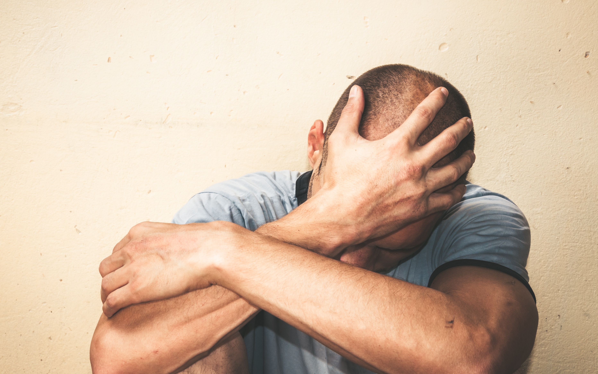

LA INVISIBILIZACIÓN DE LA VIOLENCIA DE GÉNERO AL VARÓN
Introducción
Uno de los temas más populares en la actualidad es la violencia de género contra las mujeres. La violencia de género es entendida como actos dañinos dirigidos hacia una persona o grupo de personas en un contexto de desigualdad: violencia familiar, acoso sexual, abuso de poder, discriminación, rechazo u odio. En lo que va del 2023, según el Ministerio de la Mujer y Poblaciones Vulnerables, de 5899 casos de violencia, 1139 son contra varones, representando el 19.31 %, si bien esta cifra puede parecer mínima, esto es preocupante; ya que, una vez presentados episodios de violencia, estos tienden al aumento, tanto en intensidad como en cantidad. A pesar del incremento de las cifras, estas no llegan a tener un gran impacto en la conciencia pública. Por lo que el desconocimiento de esta problemática puede llevar a la errónea idea de que no existe la violencia hacia los varones. Sin embargo, es un hecho que sí existen casos de violencia, aunque en menor cantidad si hacemos una comparación con los que sufren las mujeres. Frente a ello, consideramos que la violencia de género contra los varones debería ser más visibilizada en nuestra sociedad actual, la cual busca equidad en todos los aspectos. A continuación, se presentan los siguientes argumentos.
La poca visualización del varón como víctima debido a estereotipos y prejuicios
Según la OMS, 1 de cada 3 mujeres sufren de violencia de género, en contraste, sólo 1 de cada 10 varones lo sufren. Aunque en comparativa, la cantidad de víctimas mujeres es mayor, este problema no es sobre cantidad, la violencia sigue siendo violencia, y tanto hombres como mujeres son merecedores de vivir libres de este tipo de agresión. Aunque existe evidencia de la violencia de género contra los varones, no es públicamente tomada en cuenta, ya que la mayoría no visualiza al varón como víctima debido a que, en la percepción de la violencia de género, se les atribuye mayormente a las mujeres la posición de víctimas. Es de conocimiento empírico que la figura masculina ha sido marcada históricamente con un estereotipo caracterizado por la fuerza física e insensibilidad, caso contrario al de la mujer, quienes son vistas como sumisas, débiles y dependientes. Es importante tener en cuenta que no abordamos la violencia de género como fenómeno aislado, sino como resultado de un contexto sociocultural donde se tiene la idea hegemónica de que el varón debe ser violento. De esta manera se invisibilizan las agresiones que reciben los varones que no se acoplan a este perfil. Dichos varones estarían difiriendo de este estereotipo, pues en su relación no tendrían el imaginario rol de varón dominante. Esto pasa porque la mentalidad de este “tipo de varón”, hace que vean a la mujer como un ser inferior y emocional que debe ser protegido por ellos. Por lo tanto, al considerarse superiores, no deben ceder ante las emociones y dejar de lado su racionalidad y capacidad de diálogo, ya que estarían perdiendo su última instancia de virilidad. La falta del rol dominante generaría un conflicto en el varón que le hace negar y no denunciar este hecho, pues el ser violentados los hace sentir menos “varones” y les causa vergüenza. Y aunque estas víctimas varones no recurren a la violencia para la solución de conflictos, no revoca la idea patriarcal que tienen sobre la mujer, concluyendo que esta “jerarquía” machista en la sociedad afecta a ambas caras de la moneda. Estamos tan acostumbrados a que el varón sea el agresor que no damos pie a la idea de que pueda ser el agredido. Por lo que el ojo público, al no considerar esta violencia como tal, sino más bien ridícula, sigue sin dar prioridad pública a los varones como víctimas en temas de violencia.
Violencia contra el varón dentro de las relaciones de pareja
En el contexto de relaciones de pareja, es común pensar que el varón es el agresor, mientras que la mujer es la víctima. Sin embargo, tanto los varones como las mujeres sufren violencia, siendo la violencia física y psicológica la más común ejercida contra los varones (Rojas-Solís et al, 2019). Una de las formas más comunes de violencia contra los varones es el grito, cuya finalidad es imponer autoridad, fortaleza y control. Además, si esta manifestación de violencia no da resultado, se añaden acciones como cachetadas, patadas e incluso lanzamiento de objetos como zapatos y platos. Esto podría ser consecuencia de varios factores, por ejemplo, la falta de dinero en el hogar o el enojo de la pareja. Frente a ello, los varones no reaccionan de igual manera, difiriendo a lo que comúnmente se cree; al contrario, los varones no cuentan ni denuncian lo que están viviendo por miedo a que los hijos paguen las consecuencias, porque temen quedarse solos y por vergüenza. Esto trae consigo consecuencias negativas en la salud mental de los varones, como miedo y daño emocional, estrés postraumático y síntomas depresivos. Además, también afecta conductualmente en los hombres, quienes buscan en el alcohol u otras sustancias nocivas un refugio frente a la violencia que viven. Pero, ¿por qué los varones no terminan la relación y se alejan de su victimaria? Algunos varones se acogen a la conexión sentimental que establecieron con sus parejas, creyendo que en algún momento mejoraría esta situación. Otros varones permanecen en la relación por mantener el compromiso de estabilidad y, si esto no funciona, los invade un sentimiento de culpa. Sin embargo, para los varones que tienen hijos la decisión es más difícil, ya que les atemoriza la idea de terminar la relación y dejar la custodia de los hijos a una persona que tuvo comportamientos violentos contra ellos.
La escasa credibilidad de varones como víctimas de violencia
Respecto a casos en los cuales se pueda visualizar esta problemática tenemos el que quizás ha sido el más famoso y controversial. Este es el que ocurrió entre dos estrellas de Hollywood: Amber Heard y Johnny Depp. Toda esta situación comenzó cuando después de haber solicitado el divorcio, la actriz demandó al actor por violencia doméstica y dos años después reafirmó esto en el diario The Washington Post. Como respuesta, Depp presentó una demanda de difamación y afirmó haber sido él la víctima de violencia en vez de su exesposa. A pesar de ambos haber dado la versión de sus hechos, gran parte del público y los medios se habían puesto del lado de Amber de inmediato, dándole soporte en redes sociales y generando una ola de odio hacia el actor. Todo este caso fue llevado a la corte donde ambos dieron sus testimonios. Por parte de Johnny, él afirmó rotundamente nunca haber golpeado a una mujer en su vida y presentó una grabación en la cual su ex esposa le decía: “Dile al mundo, Johnny, diles: ‘Yo, Johnny Depp, un hombre, también soy víctima de violencia doméstica’”. Por el otro lado, Amber dijo: “Me cuesta encontrar las palabras para describir lo doloroso que es esto. Es horrible para mí sentarme aquí durante semanas y revivir todo”. También brindó casos en los cuales Johnny la habría agredido físicamente y traía consigo audios en los cuales Deep le gritaba insultos y obscenidades. Hablando sobre otro caso, en Argentina tenemos el caso de Alfredo Turcumán, quien murió acuchillado por quien era su esposa. Él ya había intentado denunciarla en la comisaría porque los actos de violencia eran concurrentes, pero fue objeto de burla y le llamaron “maricón”. Estos son claros ejemplos de la invisibilización de la violencia que pueden llegar a sufrir los hombres. Por un lado, tenemos el de los actores, en el cual en primera instancia las palabras de Amber tuvieron un grado de superioridad frente a las de Depp. Y por el otro lado, tenemos al argentino que fue objeto de burla al intentar reportar su caso frente a los policías. Esto nos muestra que para la sociedad el que un varón sea víctima de violencia es poco creíble.
Negación del problema
Es un hecho que las cifras brindadas por instituciones públicas y/o privadas sobre las víctimas de violencia de género no reflejan la totalidad de los casos, ya que siempre habrá casos donde las víctimas deciden no denunciar a sus agresores/as, lo que comúnmente se le conoce como “cifras negras”. Esto puede explicarse debido a una falta de percepción por parte de la víctima, originando no denunciar ante un hecho de violencia, ya que no lo percibirá como tal. Esta “violencia disfrazada” dependerá mucho del vínculo que tenga la víctima con su agresor/a, siendo las parejas en condición de noviazgo las que más índices de baja percepción presentan. Esto significa que la violencia ejercida por ambas partes es minimizada o tachada como “problemas de pareja”. Por otra parte, estudios demostraron que las personas casadas demostraron una mayor percepción de la violencia, ya que el casamiento implica una serie de deberes, derechos y obligaciones que aumentan la probabilidad de afrontar situaciones de conflicto Sin embargo, aunque muchas veces los varones perciben comportamientos violentos de su mujer, los toleran y aprenden a vivir. Hoy en día cada vez son más los varones que se atreven a denunciar, pero más también son los casos de falsas denuncias contra varones con el fin de castigar a su pareja y seguir haciendo su voluntad, por si no fuera poco, la impunidad que tienen las mujeres en denuncias que presentan falsamente es casi absoluta. Incluso algunos estudios revelan que, de cada siete varones denunciados, tres en realidad eran las víctimas. Ante esto es imperativo tener instituciones que velen por erradicar esta violencia invisibilizada en la sociedad actual, algo que afortunadamente ya se está logrando en países como Canadá, Reino Unido y Estados Unidos que cuentan con centros de refugio exclusivamente para proteger varones víctimas de violencia mientras tanto en países de habla hispana por el momento aún no tienen relevancia.

Conclusiones
En conclusión, la invisibilización de la violencia de género hacia los varones es un fenómeno preocupante que debe abordarse de manera urgente y efectiva en nuestra sociedad actual. A pesar de que las cifras indican que un porcentaje significativo de casos de violencia afecta a los varones, la falta de visibilidad y conciencia pública sobre esta problemática contribuye a perpetuar estereotipos y prejuicios. La percepción histórica de la figura masculina como agresor, vinculada a la fuerza física y la insensibilidad, dificulta la aceptación de los varones como víctimas de violencia de género. Este estigma impide que muchos varones denuncien los abusos que sufren, ya que se enfrentan a la negación del problema y a la vergüenza asociada a la idea de una "masculinidad frágil". La falta de reconocimiento de la violencia hacia los varones se refleja también en situaciones como las relaciones de pareja, donde la violencia física y psicológica ejercida por las mujeres puede pasar desapercibida o minimizarse. La escasa credibilidad hacia los varones como víctimas se evidencia en casos mediáticos y judiciales, como el mencionado entre Amber Heard y Johnny Depp. Además, la denominada "violencia disfrazada" en relaciones de pareja y la existencia de falsas denuncias complican aún más la percepción del problema. La falta de apoyo institucional y la impunidad en casos de denuncias falsas refuerzan la necesidad de un cambio en la percepción social y la implementación de medidas que garanticen la protección de todas las víctimas, independientemente de su género. En este contexto, es imperativo redefinir la concepción de masculinidad, eliminando estereotipos que limitan la autopercepción de los varones y generando una conciencia colectiva sobre la violencia de género en todas sus formas. Construir una sociedad equitativa y libre de violencia implica también reconocer y abordar la violencia hacia los varones, brindándoles el espacio y el apoyo necesario para denunciar y superar estos abusos.